viewof R_max = Inputs.range([100, 5000], {step: 100, value: 1000, label: "Max resistance R_max (ohms)"})
viewof V_in_pot = Inputs.range([-10, 0], {step: 0.1, value: -5.1, label: "Input voltage V_in (V, negative for inverting)"})
viewof R1_pot = Inputs.range([100, 2000], {step: 50, value: 510, label: "R1 (feedback input resistor, ohms)"})Mechanical and Strain Sensors in Instrumentation
Instruments 5.1
Imron Rosyadi
Learning Objectives
By the end of this session, you should be able to:
- Explain what mechanical variables (displacement, level, strain) are and why industry cares about them.
- Describe the operating principles of:
- Potentiometric displacement sensors
- Capacitive and inductive displacement sensors
- LVDTs (linear variable differential transformers)
- Level sensors (float, capacitive, ultrasonic, pressure-based)
- Apply basic formulas for capacitors, stress–strain, and strain gauges.
- Analyze and design simple signal‑conditioning circuits:
- Potentiometer + op amp
- Capacitive/inductive bridge circuits (conceptually)
- Strain gauge bridges (1‑arm, 2‑arm, 4‑arm)
- Work through quantitative examples involving displacement, level, and strain/load cell measurements.
Why Mechanical Sensors Matter in ECE
Mechanical phenomena are everywhere in process control and automation:
- Positions of valves, robot arms, and conveyor items
- Levels of liquids/solids in tanks and silos
- Stresses in beams, bridges, machine parts
- Forces and weights in hoppers, scales, and presses
Key idea: We rarely measure these variables directly in volts or amps. Instead, we use a sensor to convert a mechanical quantity → electrical signal.
Tip
Think of sensors as “translators” between the physical world and your electronics.
Mechanical Variables in this Session
We will focus on three broad classes:
- Displacement, Location, Position
- Linear/rotational position
- Used in: CNC machines, robotic joints, valve stems, pressure gauges
- Level
- Height of a liquid or solid in a container
- Used in: tanks, silos, chemical reactors, fuel gauges
- Strain (and related stress)
- Microscopic deformation of solids under load
- Hidden inside: pressure sensors, load cells, accelerometers, flow meters
2. Displacement, Location, or Position Sensors
Industrial needs to measure “where things are”:
- Object position on a conveyor
- Orientation of heavy steel plates in a rolling mill
- Liquid/solid level (a special kind of displacement)
- Position of a workpiece in an automatic milling machine
- Pressure → diaphragm deflection → displacement
We’ll look at three major electrical transduction mechanisms:
- Resistive (potentiometric)
- Capacitive / inductive
- Variable‑reluctance (LVDT)
2.1 Potentiometric Displacement Sensors – Concept
A potentiometric displacement sensor (potentiometer) uses a movable wiper on a resistor.
- A resistive element with total resistance \(R\) between terminals 1 and 2
- A wiper connected to an arm (mechanical linkage) at terminal 3
- As the arm moves, the wiper slides along the resistor
- The resistance between 3 and either end changes with position
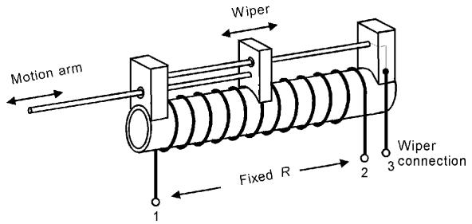
Limitations:
- Mechanical wear and friction of the wiper
- Limited resolution in wire‑wound types (step size = spacing between turns)
- Electrical noise from sliding contact
Potentiometer Resolution
In a wire‑wound potentiometer:
- Distance between turns: \(\Delta x\)
- Change in resistance between adjacent positions: \(\Delta R\)
The smallest resolvable displacement is roughly \(\Delta x\), assuming electronics can detect the resistance step \(\Delta R\).
- More turns → smaller \(\Delta x\) → better resolution
- But: more turns = higher resistance or longer device
Example 1 – Problem
Problem:
A potentiometric displacement sensor measures workpiece motion from 0 to \(10\ \mathrm{cm}\). The resistance changes linearly from 0 to \(1\ \mathrm{k}\Omega\) over this range.
Design signal conditioning that provides a linear 0–10 V output proportional to displacement.
Constraints:
- Do not destroy the linearity between resistance and displacement.
- Allowed tools: op‑amp circuits, DC references.
Example 1 – Why Not a Simple Divider?
If we put the variable resistor directly in a divider like this:
Then \[ V_\text{out} = V_s \frac{R_\text{sensor}}{R_\text{fixed} + R_\text{sensor}} \]
This is nonlinear in \(R_\text{sensor}\) because of the denominator. So even if \(R_\text{sensor} \propto x\), you’ll get a nonlinear \(V_\text{out}(x)\).
We need a configuration where \(V_\text{out}\) is directly proportional to \(R_\text{sensor}\).
Example 1 – Solution Strategy (Op‑Amp)
Use the fact that for an inverting amplifier:
\[ V_\text{out} = -\frac{R_2}{R_1} V_\text{in} \]
If we put the sensor as \(R_2\) (feedback resistor), then \(V_\text{out} \propto R_\text{sensor}\) (linearly).
We can:
- Use a constant input voltage \(V_\text{in} =\) constant
- Feed back through the variable resistance \(R_2 = R_\text{sensor}\)
- Choose \(R_1\) to scale the output to 0–10 V over \(R_\text{sensor} = 0\)–\(1\ \mathrm{k}\Omega\)
Example 1 – Detailed Solution
Use an inverting amplifier with:
- \(R_2 = R_\text{sensor}\) (0 to \(1\ \text{k}\Omega\))
- \(R_1\) fixed
- \(V_\text{in} = -5.1\ \text{V}\) from a Zener diode reference
Then \[ V_\text{out} = -\frac{R_2}{R_1} V_\text{in} \]
We want \(V_\text{out} = +10\ \text{V}\) at \(R_2 = 1000\ \Omega\):
\[ 10 = -\frac{1000}{R_1}(-5.1) \Rightarrow R_1 = 510\ \Omega \]
So:
- At 0 cm: \(R_2 \approx 0 \Rightarrow V_\text{out} \approx 0\ \text{V}\)
- At 10 cm: \(R_2 = 1\ \text{k}\Omega \Rightarrow V_\text{out} = 10\ \text{V}\)
Circuit:
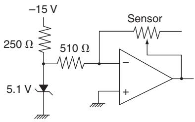
2.2 Capacitive and Inductive Displacement Sensors
These sensors use changes in:
- Capacitance \(C\) (for capacitive displacement sensors)
- Inductance \(L\) (for inductive and variable‑reluctance displacement sensors)
as a function of displacement.
Common features:
- No sliding contacts → less wear than potentiometers
- Often higher resolution and better repeatability
- Usually require AC excitation and more complex signal conditioning
Capacitive Displacement Sensors – Basic Formula
For a parallel‑plate capacitor:
\[ C = K \varepsilon_0 \frac{A}{d} \]
where:
- \(K\) = relative dielectric constant (air ≈ 1, many liquids ≫ 1)
- \(\varepsilon_0 = 8.85\ \mathrm{pF/m}\) (permittivity of free space)
- \(A\) = overlapping plate area
- \(d\) = separation between plates
So we can sense displacement by changing:
- Distance \(d\) between plates
- Area \(A\) that overlaps
- Dielectric constant \(K\) (e.g., changing fluid level)
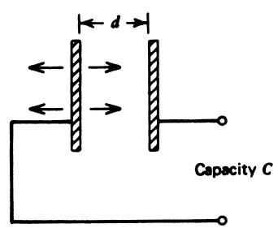
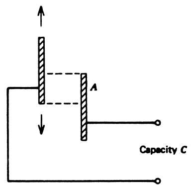
Example 2 – Cylindrical Capacitive Sensor (Setup)
A capacitive displacement sensor monitors small workpiece motion:
- Two metal cylinders, separated by plastic (thickness \(d = 1\ \mathrm{mm}\))
- Dielectric constant of plastic at \(1\ \text{kHz}\): \(K = 2.5\)
- Radius of cylinders: \(r = 2.5\ \text{cm}\)
- Overlap height (insertion depth) \(h\) changes with position
Tasks:
- Find sensitivity \(\dfrac{dC}{dh}\) in \(\mathrm{pF/m}\).
- Find capacity range if \(h\) varies from \(1.0\) to \(2.0\ \mathrm{cm}\).
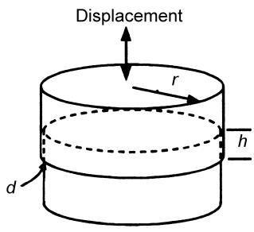
Example 2 – Solution
The overlapping cylindrical surface area is:
\[ A = 2\pi r h \]
So
\[ C = K\varepsilon_0 \frac{A}{d} = 2\pi K\varepsilon_0 \frac{rh}{d} \]
Sensitivity to \(h\):
\[ \frac{dC}{dh} = 2\pi K\varepsilon_0 \frac{r}{d} \]
Substitute:
- \(K = 2.5\)
- \(\varepsilon_0 = 8.85\ \mathrm{pF/m}\)
- \(r = 2.5\times 10^{-2}\ \mathrm{m}\)
- \(d = 10^{-3}\ \mathrm{m}\)
\[ \frac{dC}{dh} = 2\pi(2.5)(8.85\ \mathrm{pF/m})\frac{2.5\times10^{-2}}{10^{-3}} \approx 3475\ \mathrm{pF/m} \]
Because \(C\) is linear in \(h\):
- At \(h = 1.0\ \text{cm} = 10^{-2}\ \text{m}\): \(C_\text{min} = 34.75\ \mathrm{pF}\)
- At \(h = 2.0\ \text{cm} = 2\times 10^{-2}\ \text{m}\): \(C_\text{max} = 69.50\ \mathrm{pF}\)
Where Are Capacitive Sensors Used in ECE?
- Precision displacement measurement (micrometers to millimeters)
- Micro‑machined accelerometers and MEMS devices
- Touch screens and proximity sensors
- Level sensing in process tanks (using change in dielectric)
They usually feed into:
- AC bridges
- Oscillator frequency‑shift circuits
- Capacitance‑to‑digital converters
Inductive Displacement Sensors
If we slide a permeable core into a coil:
- Inductance \(L\) increases because magnetic path permeability increases
- Each core position gives a different inductance
Used as displacement sensors by:
- Exciting the coil with AC
- Measuring changes in:
- Coil impedance
- Bridge balance
- Oscillator frequency
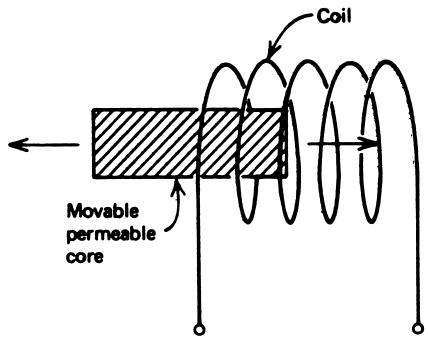
Differences vs. capacitive:
- Based on magnetic rather than electric fields
- Often less sensitive to contamination or humidity
- Need ferromagnetic cores and careful shielding
2.3 Variable‑Reluctance & LVDT – Principle
A variable‑reluctance sensor uses moving ferromagnetic parts to change magnetic flux linking two or more coils.
Most important type: LVDT – Linear Variable Differential Transformer.
Structure:
- One primary coil (center)
- Two secondary coils (symmetric, series‑opposed)
- Movable ferromagnetic core slides inside
Primary excited by AC → flux couples into secondaries.
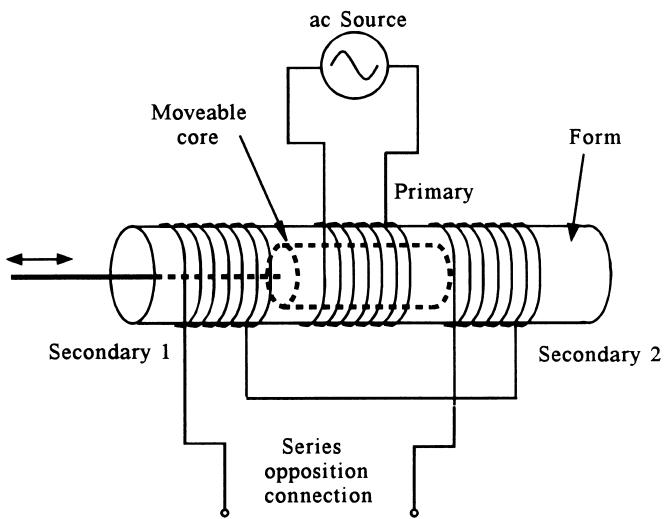
Key effect:
- Core centered → both secondary voltages equal → differential = 0
- Core displaced → one secondary > other → nonzero differential AC voltage
- The amplitude is proportional to displacement; phase indicates direction
LVDT Transfer Characteristic
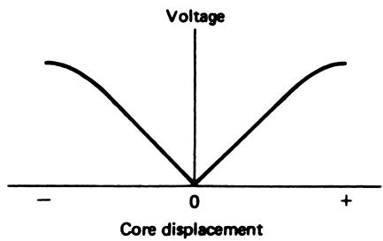
Properties:
- Around the center position, \(V_\text{diff} \approx kx\) (highly linear)
- Typical linearity: within \(\pm 0.25\%\) over specified range
- Polarity (phase) tells you which side of center the core is on
- Resolution limited mainly by your ability to measure small voltages
LVDT Signal Conditioning – Simple and Practical
Simple rectifier scheme
- Differential secondary → rectifier → low‑pass filter
- Produces a bipolar DC output vs. core displacement
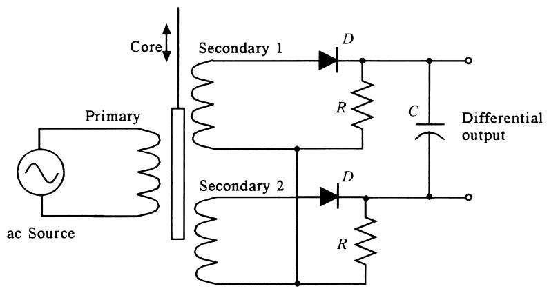
Limitation:
- Needs differential amplitude above diode drops → not as sensitive.
Practical IC‑based scheme
- On‑chip AC source for LVDT primary
- Phase‑sensitive detector (PSD)
- Filters and amplifier to yield clean bipolar DC
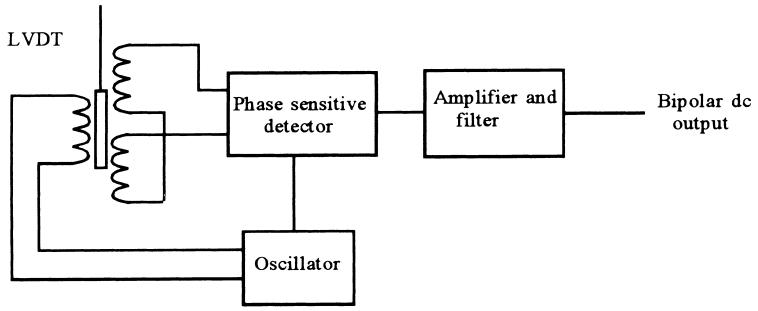
Example 3 – LVDT Output & Nonlinearity
Given:
- Maximum core motion: \(\pm 1.5\ \text{cm}\)
- Linearity: \(\pm 0.3\%\) over that range
- Transfer function: \(23.8\ \mathrm{mV/mm}\)
Used to track motion from \(x = -1.2\) to \(+1.4\ \text{cm}\).
- Find expected output voltages.
- Find uncertainty in position due to nonlinearity.
Example 3 – Solution
- Voltage at \(-1.2\ \text{cm}\) (i.e., \(-12\ \text{mm}\)):
\[ V(-1.2\ \text{cm}) = 23.8\ \mathrm{mV/mm} \times (-12\ \text{mm}) = -285.6\ \text{mV} \]
- Voltage at \(+1.4\ \text{cm}\) (\(+14\ \text{mm}\)):
\[ V(1.4\ \text{cm}) = 23.8\ \mathrm{mV/mm} \times (14\ \text{mm}) = 333\ \text{mV} \]
- Linearity uncertainty
Given linearity \(\pm 0.3\%\), the effective transfer function varies by:
\[ \Delta k = \pm 0.003 \times 23.8\ \mathrm{mV/mm} = \pm 0.0714\ \mathrm{mV/mm} \]
So an observed voltage \(V_m\) could correspond to:
\[ x_\text{min} = \frac{V_m}{23.87},\quad x_\text{max} = \frac{V_m}{23.73} \quad [\text{mm}] \]
For \(V_m = 333\ \text{mV}\):
- \(x_\text{min} \approx 13.9506\ \text{mm} = 1.39506\ \text{cm}\)
- \(x_\text{max} \approx 14.0329\ \text{mm} = 1.40329\ \text{cm}\)
So position uncertainty is about \(\pm 0.3\%\), as specified.
2.4 Level Sensors – Overview
Level measurement is essentially displacement measurement of a fluid or solid surface.
Common methods:
- Mechanical float + linkage → potentiometer, LVDT, etc.
- Electrical contact / resistance probes
- Capacitive (concentric cylinders as a capacitor)
- Ultrasonic (time of flight)
- Pressure‑based (hydrostatic pressure at bottom → level)
Level Sensing – Mechanical vs Electrical
Mechanical float
- Float rides on fluid level
- Linked to:
- Potentiometer
- LVDT core
- Simple and robust
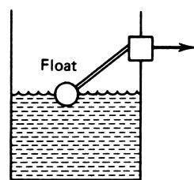
Capacitive concentric cylinder
- Two cylinders form a capacitor
- Space between partly filled with liquid, partly air
- Acts like two capacitors in parallel:
- Liquid with \(K_\text{liquid}\)
- Air with \(K \approx 1\)
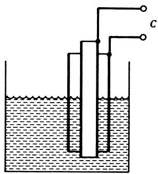
##Ultrasonic Level Measurement
Non‑contact level measurement using ultrasonic pulses:
- Transmitter \(T\) emits burst of ultrasound
- Wave reflects from material surface
- Receiver \(R\) detects echo
- Time of flight \(\Delta t\) → distance \(d\) using \(d = v_\text{sound}\Delta t/2\)
Two configurations:
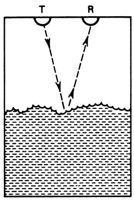
Solid or liquid, above surface.
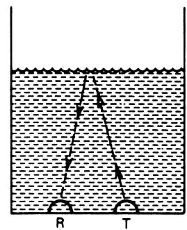
Below surface mounting for liquids.
Also widely used in ranging (parking sensors, drones).
Example 4 – Capacitive Level Sensing with Ethyl Alcohol
We measure ethanol level 0–5 m using the concentric cylinder capacitor:
- Dielectric constants:
- Air: \(K = 1\)
- Ethyl alcohol: \(K = 26\)
- Cylinder separation: \(d = 0.5\ \text{cm} = 0.005\ \text{m}\)
- Average radius: \(R = 5.75\ \text{cm} = 0.0575\ \text{m}\)
- Maximum level (length): \(L = 5\ \text{m}\)
Area of full cylinder wall:
\[ A = 2\pi R L \]
Tasks: Find capacitance range from empty (air only) to full (alcohol only).
Example 4 – Solution
Compute area:
\[ A = 2\pi (0.0575\ \text{m})(5\ \text{m}) = 1.806\ \text{m}^2 \]
Capacitance in air:
\[ C_\text{air} = K \varepsilon_0 \frac{A}{d} = (1)(8.85\ \mathrm{pF/m})\frac{1.806}{0.005} \]
\[ C_\text{air} \approx 3196\ \text{pF} \approx 0.0032\ \mu\text{F} \]
With ethyl alcohol (full):
\[ C_\text{EtOH} = 26 \times C_\text{air} \approx 26 \times 0.0032\ \mu\text{F} = 0.0832\ \mu\text{F} \]
Range: \(0.0032\) to \(0.0832\ \mu\text{F}\) as level goes from 0 to 5 m.
3. Strain & Stress – Why ECE Cares
Strain sensors show up inside many secondary devices:
- Pressure sensors: diaphragm strain under pressure
- Load cells: strain in beams due to weight or force
- Flow sensors: deflection of elements exposed to fluid flow
- Accelerometers: proof mass bending a beam
If you understand stress → strain → resistance change, you can interpret many transducers.
3.1 Stress and Strain – Definitions
Stress: internal “force per area” in a material
\[ \text{Stress} = \frac{F}{A} \quad [\mathrm{N/m^2}] \]
Strain: normalized deformation (dimensionless)
- Tensile/compressive strain: \[\text{Strain} = \frac{\Delta l}{l}\]
- Shear strain: \[\text{Shear strain} = \frac{\Delta x}{l}\]
Types:
- Tensile (pulling)
- Compressive (pushing)
- Shear (sliding layers)
Tensile and Compressive Stress/Strain
Tensile:
Forces pull the rod apart
Stress: \[\sigma = \frac{F}{A}\]
Strain: \[\epsilon = \frac{\Delta l}{l}\]
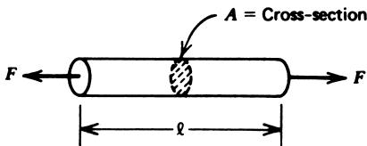
Compressive:
- Forces push inward
- Same formulas, but \(\Delta l\) is negative
- Often written as compressive stress, compressive strain
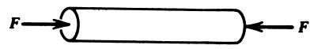
Stress units: \(\mathrm{N/m^2}\) (also called Pa, Pascal).
Shear Stress and Strain
Shear stress comes from a force couple that tries to slide one face relative to the other.
Stress:
\[ \tau = \frac{F}{A} \]
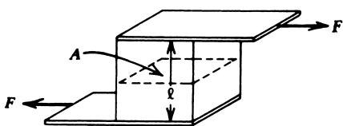
Shear strain is the lateral displacement normalized by thickness:
\[ \gamma = \frac{\Delta x}{l} \]
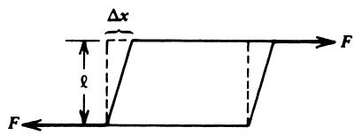
Stress–Strain Curves & Young’s Modulus
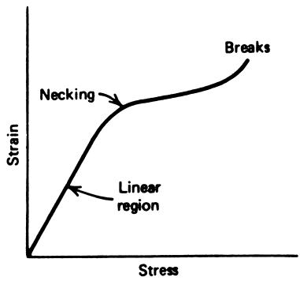
Key regions:
- Linear (elastic) region: stress ∝ strain
- Elastic limit: beyond which permanent deformation occurs
- Necking → eventual fracture
In the linear region, we define:
\[ E = \frac{\text{stress}}{\text{strain}} = \frac{F/A}{\Delta l / l} \quad [\mathrm{N/m^2}] \]
\(E\) is Young’s modulus (tensile/compressive).
Similarly for shear:
\[ M = \frac{\text{shear stress}}{\text{shear strain}} = \frac{F/A}{\Delta x/l} \]
Modulus of Elasticity – Typical Values
Table 1: Young’s modulus \(E\)
| Material | Modulus (\(\mathrm{N/m^2}\)) |
|---|---|
| Aluminum | \(6.89 \times 10^{10}\) |
| Copper | \(11.73 \times 10^{10}\) |
| Steel | \(20.70 \times 10^{10}\) |
| Polyethylene plastic | \(3.45 \times 10^{8}\) |
Soft materials (plastics) have much lower \(E\) → large strain for small stress.
Example – Strain in an Aluminum Beam
Problem:
Find the strain resulting from a tensile force of \(1000\ \mathrm{N}\) applied to a 10‑m aluminum beam with cross‑sectional area \(A = 4\times10^{-4}\ \mathrm{m^2}\).
Solution:
From table: \(E = 6.89\times10^{10}\ \mathrm{N/m^2}\).
Using
\[ E = \frac{F/A}{\Delta l / l} \Rightarrow \epsilon = \frac{\Delta l}{l} = \frac{F}{EA} \]
Compute:
\[ \epsilon = \frac{10^3}{(6.89\times10^{10})(4\times10^{-4})} \approx 3.63\times10^{-5} \]
In “micros”:
- \(3.63\times10^{-5} = 36.3\times10^{-6}\) → \(36.3\ \mu\mathrm{m/m}\)
Strain Units in Practice
Strain is dimensionless, but we usually express as:
- \(\mu\mathrm{m/m}\) (“microstrain”)
- \(\mu\mathrm{in/in}\)
Conversion:
- \(1\ \mu\text{strain} = 1\times10^{-6}\) strain
- Typical engineering strains: 1–2000 \(\mu\text{strain}\)
Engineers often say simply “micros”, e.g., “1450 micros” meaning \(1450\ \mu\mathrm{m/m}\).
3.2 Strain Gauge Principle – Resistance vs Strain
For a metal wire:
\[ R_0 = \rho \frac{l_0}{A_0} \]
Under tensile stress:
- Length increases: \(l = l_0 + \Delta l\)
- Cross‑sectional area decreases: \(A = A_0 - \Delta A\)
Assuming volume is approximately constant:
\[ V = l_0 A_0 = (l_0 + \Delta l)(A_0 - \Delta A) \]
New resistance:
\[ R = \rho \frac{l_0 + \Delta l}{A_0 - \Delta A} \]
With some algebra and approximation, we get:
\[ R \approx \rho \frac{l_0}{A_0} \left( 1 + 2\frac{\Delta l}{l_0} \right) \]
So change in resistance:
\[ \Delta R \approx 2R_0 \frac{\Delta l}{l_0} \]
Conclusion: \(\Delta R\) is proportional to strain \(\left(\dfrac{\Delta l}{l_0}\right)\).
Example – Resistance Change for Given Strain
Problem:
Find the approximate change in resistance of a metal wire with \(R_0 = 120\ \Omega\) that experiences a strain of \(1000\ \mu\mathrm{m/m} = 10^{-3}\).
Solution:
Using
\[ \Delta R \approx 2R_0\frac{\Delta l}{l_0} \]
\[ \Delta R \approx 2 \times 120\ \Omega \times 10^{-3} = 0.24\ \Omega \]
So a 0.24 Ω change on top of 120 Ω – about 0.2%.
Temperature Effects on Strain Gauges
Problem: metals have significant temperature coefficients of resistance:
- \(\alpha \approx 0.004/^\circ\mathrm{C}\)
Temperature effect on resistance:
\[ R(T) = R(T_0)[1 + \alpha \Delta T] \Rightarrow \Delta R_T = R_0 \alpha \Delta T \]
Example:
- \(R_0 = 120\ \Omega\)
- \(\Delta T = 1^\circ\mathrm{C}\)
- \(\alpha = 0.004/^\circ\mathrm{C}\)
Then
\[ \Delta R_T = 120\times 0.004 \times 1 = 0.48\ \Omega \]
Compare with 0.24 Ω due to strain in previous example → temperature effect is actually bigger than strain effect!
Hence: we need temperature compensation in our strain gauge circuits.
3.3 Metal Strain Gauges – Gauge Factor
The approximate relation \(\Delta R \approx 2R_0\epsilon\) is not exact, so we define:
\[ \mathrm{GF} = \frac{\Delta R / R}{\text{strain}} = \frac{\Delta R / R}{\Delta l / l} \]
For metal strain gauges:
- GF ≈ 2 (slightly above or below depending on alloy)
Higher GF → larger \(\Delta R\) for same strain → easier measurement.
Example: If GF = 2.03 and strain = \(1450\ \mu\mathrm{m/m}\):
\[ \frac{\Delta R}{R} = \mathrm{GF}\cdot\epsilon = 2.03 \times 1450\times10^{-6} \]
Metal Strain Gauge Construction
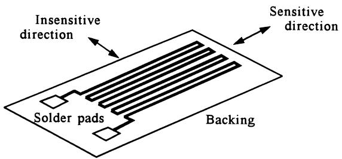
Features:
- Thin metal foil (or wire) patterned into a meander to:
- Increase effective length (higher resistance)
- Make gauge sensitive in one direction (along the pattern)
- Bonded to a backing (carrier) that is glued to the test object
- Available nominal resistances: 60, 120, 240, 350, 500, 1000 Ω (120 Ω common)
Strain along the gauge axis changes resistance; strain perpendicular tends to “unfold” pattern → little effect.
Strain Gauge Signal Conditioning – The Wheatstone Bridge
Two main challenges:
- Very small fractional resistance changes (e.g., \(2\times10^{-6}\))
- Temperature‑induced resistance changes must be canceled
Solution: Wheatstone bridge circuits with:
- One or more “active” gauges (sense strain)
- “Dummy” gauges for temperature compensation
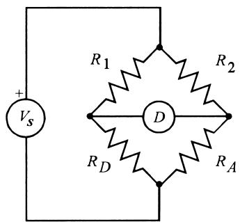
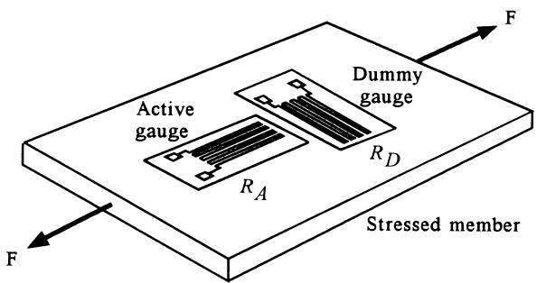
One‑Arm Bridge – Sensitivity Derivation
Assume:
- All bridge resistors \(R_1, R_2, R_D\) (dummy) are \(R\)
- Active gauge resistance: \(R_A = R(1 + \Delta R/R)\)
Bridge offset voltage:
\[ \Delta V = V_s\left[\frac{R_D}{R_D + R_1} - \frac{R_A}{R_A + R_2}\right] \]
With algebra and assuming \(\Delta R/R \ll 1\):
\[ \Delta V \approx -\frac{V_s}{4}\frac{\Delta R}{R} \]
Using GF definition:
\[ \Delta V = -\frac{V_s}{4}\,\mathrm{GF}\,\frac{\Delta l}{l} \tag{14} \]
So bridge output is linear in strain.
Example 7 – One‑Arm Bridge with Temperature Compensation
Given:
- GF = 2.03, \(R_A = R_D = R_1 = R_2 = 350\ \Omega\)
- Strain = \(1450\ \mu\mathrm{m/m} = 1.45\times10^{-3}\) (tensile)
- \(V_s = 10.0\ \text{V}\)
Tasks:
- Find change in \(R_A\).
- Find bridge offset voltage.
- Sensitivity in \(\mu\text{V}\) per microstrain.
Solution:
- From GF definition:
\[ \Delta R = \mathrm{GF} \cdot \epsilon \cdot R = 2.03 \cdot 1.45\times10^{-3} \cdot 350 \approx 1.03\ \Omega \]
So \(R_A \approx 351\ \Omega\).
- Bridge off‑null voltage (exact calculation):
\[ \Delta V = V_s\left[\frac{350}{350+350} - \frac{351}{351+350}\right] = 10\left[0.5 - \frac{351}{701}\right] \approx -7\ \text{mV} \]
- From Equation (14):
\[ \Delta V = -\frac{10}{4} \cdot 2.03\,\epsilon = -5.075\,\epsilon \]
For 1 microstrain (\(\epsilon = 10^{-6}\)):
\[ \Delta V \approx -5.075\times10^{-6}\ \text{V} = -5.08\ \mu\text{V} \]
(NB: the textbook states \(10.15\ \mu\text{V}\); that corresponds to a slightly different coefficient, but the order of magnitude is what matters.)
Two‑Arm and Four‑Arm Bridges
Two‑arm bridge: two active gauges in bridge, two dummies.
- Sensitivity doubles:
\[ \Delta V = \frac{V_s}{2}\mathrm{GF}\,\frac{\Delta l}{l} \tag{15} \]
Four‑arm bridge: all four resistors are active gauges, arranged so that two are in tension, two in compression.
- Temperature compensation and further sensitivity gain.
Application example: cantilever beam with four gauges:
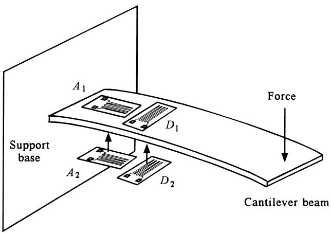
- Top surface: tension when beam deflects downward
- Bottom surface: compression
- Dummies placed so they see same temperature but no strain
Example – Bridge Wiring for Beam Bending
We want bridge output to increase with downward deflection.
Connect gauges so that:
- Tension gauge increases resistance (top active)
- Compression gauge decreases resistance (bottom active)
- Their effects add in the bridge output.
Resulting connection (conceptually):
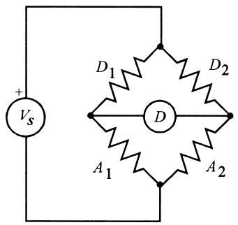
Typical implementation uses:
- 2 active gauges in positions where strain is highest
- 2 dummies oriented for temperature compensation only
3.4 Semiconductor Strain Gauges
Semiconductor (e.g., silicon) gauges:
- Operate on piezoresistive effect: strain changes carrier mobility and resistivity
- Both geometry and resistivity change with strain
- Typically much higher GF:
- GF can be −50 to −200 (magnitude)
- Often negative GF: resistance decreases under tensile strain
- Strongly nonlinear GF vs. strain
Appearance:
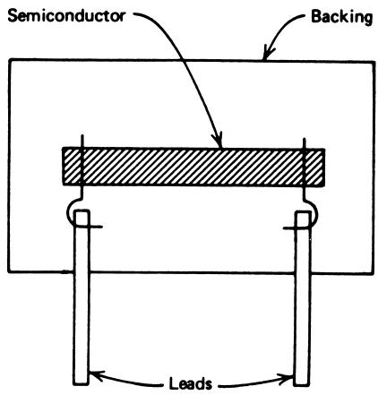
Need calibration curves or lookup tables: GF is not constant over strain range.
Example 9 – Metal vs Semiconductor GF
Compare resistance change for strain \(\epsilon = 150\ \mu\mathrm{m/m} = 0.15\times10^{-3}\), both with \(R_0 = 120\ \Omega\).
GF definition:
\[ \mathrm{GF} = \frac{\Delta R / R}{\epsilon} \Rightarrow \Delta R = \mathrm{GF} \cdot \epsilon \cdot R \]
- Metal gauge, GF = 2.13:
\[ \Delta R = 2.13\times 0.15\times10^{-3}\times 120 = 0.038\ \Omega \]
- Semiconductor gauge, GF = −151:
\[ \Delta R = -151\times 0.15\times10^{-3}\times 120 = -2.72\ \Omega \]
Takeaway: semiconductor gauge response is ~70× larger (and opposite sign).
3.5 Load Cells – From Strain to Force/Weight
Load cell: a transducer that measures force or weight via strain.
- Often an elastic element (beam, column, yoke) with multiple strain gauges bonded.
- Gauges connected in a bridge: measure deformation due to applied load.
- Factory calibration maps bridge output voltage → force/weight.
- Can measure forces up to several mega‑newtons.
Common use:
- Hopper and silo weight measurement
- Industrial scales
- Test rigs measuring tensile/compressive loads
Example 10 – Simple Load Cell Analysis
We have:
- Aluminum post, radius \(r = 2.500\ \text{cm} = 0.0250\ \text{m}\)
- Load: 0 to \(5000\ \text{lb}\)
- Strain gauges: \(R = 120\ \Omega\), GF = 2.13
- Bridge: one active, one dummy (Figure 16 type)
- \(R_1 = R_2 = R_D = 120\ \Omega\)
- Supply \(V_s = 2\ \text{V}\)
Find \(\Delta V\) vs load from 0 to \(5000\ \text{lb}\).
Example 10 – Solution Steps
- Convert load to SI:
\[ F = \frac{5000\ \text{lb}}{0.2248\ \text{lb/N}} \approx 22240\ \text{N} \]
- Cross‑section area of post:
\[ A = \pi r^2 = \pi (0.025)^2 \approx 1.963\times10^{-3}\ \mathrm{m^2} \]
From table: \(E_\text{Al} = 6.89\times10^{10}\ \mathrm{N/m^2}\)
Strain at 5000 lb:
\[ \epsilon = \frac{\Delta l}{l} = \frac{F}{EA} = \frac{22240}{(6.89\times10^{10})(1.963\times10^{-3})} \approx 1.644\times10^{-4} = 164.4\ \mu\mathrm{m/m} \]
- Fractional resistance change using GF:
\[ \frac{\Delta R}{R} = \mathrm{GF}\,\epsilon = 2.13 \times 1.644\times10^{-4} = 3.502\times10^{-4} \]
So \(\Delta R = 120 \times 3.502\times10^{-4} \approx 0.0420\ \Omega\).
Because this is compression, \(R_A\) decreases to about \(119.958\ \Omega\).
Bridge off‑null voltage:
\[ \Delta V = V_s\left[\frac{120}{120+120} - \frac{119.958}{119.958+120}\right] \approx 2\left[0.5 - \frac{119.958}{239.958}\right] \approx 175\ \mu\mathrm{V} \]
So as force ranges from 0 to 5000 lb, \(\Delta V\) goes from 0 to about \(175\ \mu\text{V}\).
Note: That is a very small signal → requires amplification.
Load Cell Practical Considerations
The simple post in Example 10 has issues:
- Real loads may cause bending or off‑axis forces → different strain on each side.
- Uneven loading causes measurement errors.
Practical load cells use shaped flexures or yoke assemblies to:
- Concentrate strain where gauges are mounted
- Make strain field more uniform and predictable
- Minimize sensitivity to side loads and bending moments
Result: more accurate, robust force measurement.
Key Formulas Summary
Capacitive sensors
- Parallel plate: \[C = K\varepsilon_0\frac{A}{d}\]
Strain gauges
- Approximate metal gauge relation: \[\Delta R \approx 2R_0\epsilon\]
- Gauge factor: \[\mathrm{GF} = \frac{\Delta R / R}{\epsilon}\]
- One‑arm bridge output (small strain): \[\Delta V \approx -\frac{V_s}{4}\,\mathrm{GF}\,\epsilon\]
- Two‑arm bridge: \[\Delta V \approx \frac{V_s}{2}\,\mathrm{GF}\,\epsilon\]
Stress & strain
- Tensile/compressive stress: \[\sigma = \frac{F}{A}\]
- Tensile/compressive strain: \[\epsilon = \frac{\Delta l}{l}\]
- Shear stress: \[\tau = \frac{F}{A}\]
- Shear strain: \[\gamma = \frac{\Delta x}{l}\]
- Young’s modulus (tension/compression): \[E = \frac{\sigma}{\epsilon} = \frac{F/A}{\Delta l/l}\]
- Shear modulus: \[M = \frac{\tau}{\gamma}\]
Summary / Key Points
- Displacement sensors
- Potentiometric sensors are simple but suffer from wear and limited resolution.
- Capacitive and inductive sensors provide non‑contact measurements with better durability and sensitivity.
- LVDTs are industry‑standard for linear displacement with excellent linearity and resolution.
- Level sensors
- Many physical principles can be used: floats, capacitance, ultrasonics, and pressure.
- Capacitive and ultrasonic methods allow non‑contact or non‑intrusive level measurement.
- Strain and stress
- Stress (force/area) and strain (relative deformation) are fundamental to many transducers.
- Young’s modulus links stress and strain in the elastic region.
- Strain gauges
- Metal gauges use resistance change to measure strain; GF ≈ 2.
- Semiconductor gauges offer much higher GF but are nonlinear and more temperature‑sensitive.
- Wheatstone bridges with dummy gauges are crucial for sensitivity and temperature compensation.
- Load cells
- Use strain gauges on mechanical elements to convert force/weight into an electrical signal.
- Output signals are typically in the microvolt to millivolt range and must be amplified.
Interactive Deck
1. Potentiometric Displacement Sensor – Direct Computation
Use this block to explore how a linear potentiometric sensor maps displacement → resistance → output voltage using the Example 1 circuit (inverting amplifier).
Assumptions:
- Displacement range: 0 to 10 cm
- Resistance range: 0 to 1000 Ω (linear)
- \(V_\text{in} = -5.1\ \mathrm{V}\), \(R_1 = 510\ \Omega\), \(R_2 = R_\text{sensor}\)
Try different x_cm values and observe the linearity in \(V_\text{out}\).
2. Potentiometer – Interactive Transfer Curve (OJS + Pyodide + Plotly)
Use the sliders to explore how the potentiometric sensor behaves over its range.
Use this to see how changing \(R_\text{max}\), \(V_\text{in}\), or \(R_1\) changes the slope of the transfer function.
3. Capacitive Sensor – Cylinder Overlap (Example 2)
Compute capacitance for the cylindrical sensor of Example 2 as a function of overlap height \(h\).
Parameters (fixed from the example):
- \(K = 2.5\)
- \(\varepsilon_0 = 8.85\ \mathrm{pF/m}\)
- \(r = 2.5\ \mathrm{cm}\)
- \(d = 1\ \mathrm{mm}\)
Change h_cm and verify the linear relation between \(h\) and \(C\).
4. Capacitive Sensor – Interactive Sensitivity Plot
Use sliders to explore sensitivity \(\dfrac{dC}{dh}\) and the capacitance vs. overlap height.
Experiment with \(K\), \(r\), and \(d\) to see how they affect sensor sensitivity.
5. Stress–Strain Calculator for a Rod
Compute tensile strain for a rod given force, cross‑section area, and Young’s modulus.
Modify F_N, A_m2, or E to see how the strain changes.
6. Stress–Strain Interactive Plot (Material Comparison)
Pick a material and force, and see the resulting strain for a given geometry.
viewof mat_choice = Inputs.select(
["Aluminum", "Copper", "Steel", "Polyethylene"],
{label: "Material", value: "Aluminum"}
)
viewof F_N_stress = Inputs.range([0, 5000], {step: 100, value: 1000, label: "Applied force F (N)"})
viewof A_mm2 = Inputs.range([10, 1000], {step: 10, value: 400, label: "Cross-sectional area (mm^2)"})Compare different materials to see which deforms more under the same load.
7. Metal Strain Gauge – ΔR from Strain
Use this block to compute the resistance change of a metal gauge given strain and GF.
Change strain_micro or GF to see sensitivity.
8. Strain Gauge Bridge – One‑Arm Output vs Strain
Now visualize how the one‑arm Wheatstone bridge output depends on strain.
We use:
\[ \Delta V \approx -\frac{V_s}{4}\,\mathrm{GF}\,\epsilon \]
Observe how increasing \(V_s\) or GF increases the signal.
9. Semiconductor vs Metal Strain Gauge – ΔR Comparison
Interactively compare resistance changes for metal vs semiconductor gauges.
viewof R0_g = Inputs.range([60, 500], {step: 10, value: 120, label: "Gauge nominal resistance R0 (ohms)"})
viewof GF_metal = Inputs.range([1.8, 3.0], {step: 0.05, value: 2.13, label: "Metal gauge GF"})
viewof GF_semi = Inputs.range([-300, -20], {step: 5, value: -151, label: "Semiconductor gauge GF"})
viewof strain_micro_g = Inputs.range([10, 2000], {step: 10, value: 150, label: "Strain (microstrain)"})Notice how the semiconductor gauge produces a much larger (and often negative) ΔR.
10. Load Cell – Strain and Bridge Output vs Load (Example 10‑Style)
Explore how a simple compressive load cell responds to load up to 5000 lb.
viewof F_lb_max = Inputs.range([1000, 10000], {step: 500, value: 5000, label: "Max load (lb)"})
viewof r_cm_load = Inputs.range([1, 5], {step: 0.1, value: 2.5, label: "Post radius (cm)"})
viewof GF_load = Inputs.range([1.8, 3.0], {step: 0.05, value: 2.13, label: "Gauge factor GF"})
viewof Vs_load = Inputs.range([1, 10], {step: 0.5, value: 2.0, label: "Bridge supply Vs (V)"})Explore how changing radius, GF, or supply voltage affects sensitivity.
11. Summary Interactive Reflection
Use this quick computation to connect multiple ideas:
- Choose a material (for Young’s modulus)
- Choose force and dimensions
- Compute strain, then ΔR of a gauge, then bridge output.
viewof mat_sum = Inputs.select(
["Aluminum", "Copper", "Steel"],
{label: "Material (for Young's modulus)", value: "Steel"}
)
viewof F_N_sum = Inputs.range([0, 20000], {step: 500, value: 5000, label: "Force F (N)"})
viewof A_mm2_sum = Inputs.range([50, 2000], {step: 50, value: 500, label: "Cross-sectional area (mm^2)"})
viewof GF_sum = Inputs.range([1.8, 3.0], {step: 0.05, value: 2.0, label: "Gauge Factor GF"})
viewof R0_sum = Inputs.range([60, 500], {step: 10, value: 120, label: "Gauge Resistance R0 (ohms)"})
viewof Vs_sum = Inputs.range([1, 15], {step: 0.5, value: 5.0, label: "Bridge Supply Vs (V)"})Try different combinations until you can mentally predict the trend before running the code. This is the core of building engineering intuition.